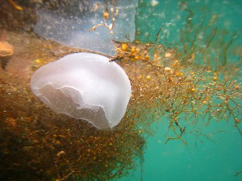

田子でシュノーケル | 2009年8月 幹事：べっしー |
|---|---|
夏といえば海！ 海が綺麗な伊豆にシュノーケルしに行きました。 今回は伊豆の田子という場所。土肥からまだ南に行った所ですが、とても小さな海岸です。道路を走っていても、海水浴場があるなんて気が付かないほどです。実際、海水浴場と言うより、海に出られる隙間と表現したほうが良いくらいかも。 その狭い海岸に多くの家族連れ等でひしめき合い、場所取りが大変なほどです。お盆休み直前で道路も渋滞してました。 | |
 海から見ると狭いな〜〜(笑 |  さあ行こう！ |
| 田子の海岸ですが、海に向かって真正面に島があり、左手に防波堤があります。島までは100mもあるのかな？ 足がつく深さなので泳いで行けます。 天候は曇り、悪くは無かったのですが、ちょっと波にうねりが入っていて、海底の砂を巻上、海の透明度はイマイチでした。 それでも、海は青く、小さな魚が一杯見えます。あ〜、これで透明度が良かったらね〜。 ソライロスズメダイとか、黄色と黒の縞々のやつもいましたね。海水はちょっと冷たかったですね。 | |
 ちょっとした岩くぐり有ります |  こういうの、何て言うんだろう |
| お昼はコンビニのお弁当を食べて、ちょっと果物などを食べながら休憩して、また海へ。午後になると、チラホラ帰る人も居るので、場所もすいてきます。 今回はクラゲも発見。って、発見したくない者ですな。でも、半透明なプヨプヨ漂う姿は、見ていてちょっと楽しいです。まあ、ラッシュガードも着ているのでそんなに刺される心配もなく、写真も撮りました。 | |
 ちょっと濁ってるよね |  魚は一杯だよ〜 |
| そして、今回の収穫はイカでした。とっても小さなイカ（？）で、手のひらぐらいかな？体が半透明で、茶色の筋が入っている感じです。追いかけると直ぐ逃げちゃうので、写真を撮るのも大変。（しかも、半透明で写真で分り難い） 夢中で追いかけてましたね。 程よく3時には帰りました。また、帰りに伊豆の道路は渋滞で、運転手さんありがとう、って感謝です。沼津の丸天にて夕食、お魚見たからお魚食べるって事で。フライ盛、おいしゅうございました。 | |
|  こうしてみるとクラゲも綺麗です |  イカだよね？！ |
| 写真＆コメント ｂｙ べっしー | |